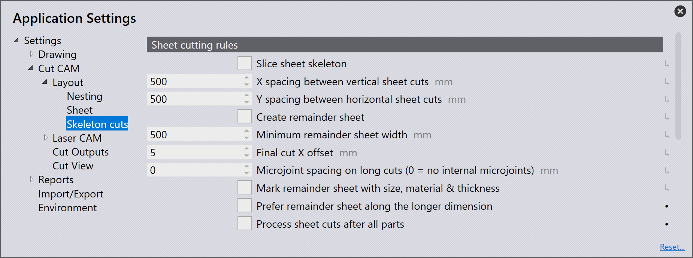
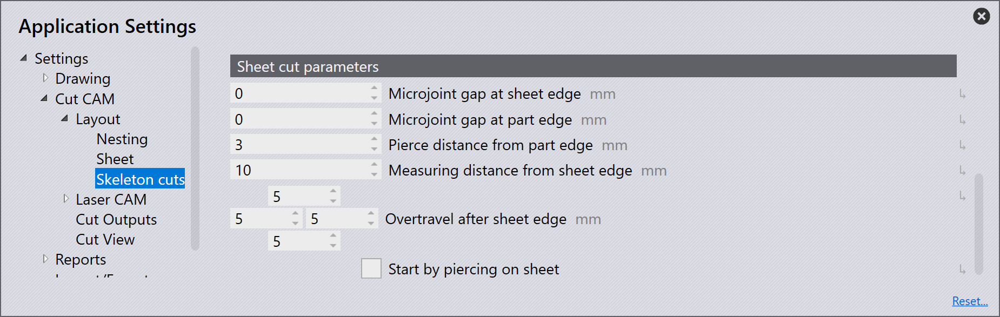

Skeleton cuts
Sheet cutting rules

Slice sheet skeleton: If you turn this option on, TecZone Laser will automatically add spaced horizontal and vertical cuts to the layout. The slice lines are added from bottom left corner of the sheet. If a slice line passes through some parts, TecZone Laser will automatically detect this, and add multiple slice lines to slice out only the skeleton sheet left between the parts.
X spacing between vertical sheet cuts: This is the spacing between vertical slice lines.
Y spacing between horizontal sheet cuts: This is the spacing between horizontal slice lines.
Create remainder sheet: A remainder sheet creates a clean cut to separate the remainder sheet from the skeleton.
Minimum remainder sheet width: Even if the above is checked, a final cut will be added only when the width of the unused sheet created by the cut is greater than or equal to this value.
Final cut X offset: This is the distance from the right most extreme of part tooling to the final vertical cut that creates the remnant sheet.
Microjoint spacing on long cuts (0 = no internal microjoints): TecZone Laser has the ability to create microjoints on sheet cuts automatically. User can specify the microjoints spacing distance under Sheet cutting rules in settings. Microjoints will be inserted into any cut that is longer than this length. By default, this setting is set to 0 mm, which means that microjoints are not required on sheet cuts.
Two kinds of microjoints are possible on sheet cuts; hard and nano.
| By default hard microjoints are created unless nano is preferred. |
Even for hard microjoints, piercing will happen on the line. There will be no approach path. However, if the LTT recommends a reduced speed approach, then a part of the line will be cut at reduced speed after the microjoint.
Mark remainder sheet with size, material & thickness: TecZone Laser can mark the remainder sheet with the material name, thickness and size.
If this option is selected, marking will be added if there are remainder sheet cut(s) on the layout. If the remainder sheet cut is removed due to some change in the settings, marking will also be removed. Marking will always be aligned along the sheet cut, positioned at its center. If there is not enough space to insert the text, TecZone Laser will automatically shrink the text size or change the orientation of the marking text.
Marking can also be edited using the Laser Text settings. Changes applied to text, height and angle are remembered but the position is recomputed whenever the position of remainder cut(s) change.
Prefer remainder sheet along the longer dimension: This option will be turned on by default. If this option is turned on, the nesting engine will pick the pattern with parts pushed along the larger dimension unless if the pattern with parts pushed along the shorter dimension saves 50% more sheet than the former. If this option is turned off, the nesting engine will pick the pattern that produces better remnant sheet (based on the area of the remnant sheet) irrespective of the nesting direction.
Process sheet cuts after all parts: By default, when sequencing, TecZone Laser will process the slice cuts before processing the tooling of the parts. This is usually a good idea, as the laser head can freely roam around the uncut sheet while making the slice cuts. However, if you want to process the slice cuts at the end, after processing all parts, check this option. The following parameters effect how each individual slice cut is programmed.
Sheet cut parameters

Microjoint gap at sheet edge: Set this to a value greater than zero if you want a small web left at the points where the slice cut touches the sheet edge.
Microjoint gap at part edge: Set this to a value greater than zero if you want a small web left at the points where the slice cut touches the part edge.
Pierce distance from part edge: This is the distance of the pierce point from the part edge. If it is a non-zero value, TecZone Laser will pierce this distance away from the edge, then move towards the edge, before turning 180 degrees right at the edge, retracing the approach it made, to finish the main cut.

Measuring distance from sheet edge: If no wirejoint is being created at the sheet edge, it implies that the machine has to cut the sheet through till the end. But that cannot be done with height regulation on, as it will risk the machine head collapsing into the machine bed after the sheet. This parameter identifies the distance before the sheet edge where the laser head height is locked and distance regulation is turned off. When starting a cut at sheet edge, the machine will actually reach the measuring point defined by this parameter, measure the sheet height, lock its head Z position, move out of the sheet, switch the laser on and then start cutting with distance regulation off until it again reaches the same measuring point.
Overtravel after sheet edge: This is the amount by which the machine head travels beyond the sheet edge with laser on but distance regulation off. It is possible to provide overtravel distance for left, bottom, right and top sheet edges individually.
Start by piercing on sheet: When cutting a sheet, the nozzle lowers down in the overtravel path. If the laser head isn’t raised back up before re-entering the sheet, it can crash into the sheet and damage the nozzle. Enabling the
Start by piercing on sheet: This settings is used to prevent nozzle damage while using high speed eco nozzle. By default, this option will be off. If this is enabled, especially when performing a slice cut from the sheet edge, the piercing will be done on the sheet closer to the edge apart from locking the laser head at that point.